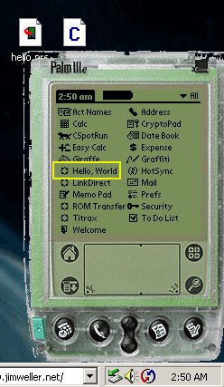
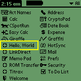

This guide is intended to help those new to palm programming get started developing using linux, PRC Tools, GNU tools, and the PalmOS© SDK. It assumes a fair knowledge of linux and GNU tools and a user level understanding of the PalmOS. There are development tools for Windows, but whaateverrr. If you find this at all useful please drop me a 5+ word email, for gloating statistics.
These are my notes from the night when I learned these tools. It
will take you from clueless to empowered (able to compile a HelloWorld program).
I couldn't find a working equivalent. So, I hope this information will be
helpful, but it is provided with no warranty or gaurantee. If you break anything
you get to keep both pieces.
[top]
You'll need to download the PRC tools, the palm emulator, the PalmOS © SDK, and some GNU development tools ( see downloads ). I downloaded to ~/palm/archive (YMMV).
Building the emulator for linux was a another step I didn't want to deal with yet. Fear not. It's Weller with 2 L's. I will do it soon, and I'll rewrite this doc to reflect that portion. For now I just got the windows prebuilt emulator and skins. Pretty straight forward. You install a palm app that comes with the package to your handheld. This allows you to download the PalmOS © image from the palm's rom. You have to pay money and sign an NDA (double whammy) to get other rom images/versions. Anybody got an archive ;) Do the deed as in the readmes and Blamh your palm on your desktop. Plus you can hotsync over the network with the regular hotsync manager and the emulator.
http://www.PalmOS.com/dev/tech/tools/emulator/
export MYPALMDIR=/root/palm
export MYARCHIVEDIR=$MYPALMDIR/archive
export PATH=/usr/local/palm/bin:$PATH
mkdir /usr/local/palmdev
mkdir /usr/local/palm
cd $MYPALMDIR
tar -xzf $MYARCHIVEDIR/sdk35.tar.gz
mv Palm\ OS \ 3.5\ Support/ /usr/local/palmdev/sdkpalmos-3.5
cd /usr/local/palmdev/sdkpalmos-3.5
mv Incs include
cd $MYPALMDIR
mkdir src
cd src
tar -xzf $MYARCHIVEDIR/binutils-2.9.1.tar.gz
tar -xzf $MYARCHIVEDIR/gcc-2.95.2.tar.gz
tar -xzf $MYARCHIVEDIR/gdb-4.18.tar.gz
tar -xzf $MYARCHIVEDIR/prc-tools-2.0.tar.gz
cat prc-tools-2.0/{binutils-2.9.1,gcc-2.95.2,gdb-4.18}.palmos.diff | patch -p0
cd prc-tools-2.0/
ln -s ../binutils-2.9.1 binutils
ln -s ../gcc-2.95.2 gcc
ln -s ../gdb-4.18 gdb
cd ..
mkdir build
cd build
mkdir empty
../prc-tools-2.0/configure \
--target=m68k-palmos; \
--enable-languages=c,c++ \
--with-headers=`pwd`/empty \
--sharedstatedir=/usr/local/palmdev \
--prefix=/usr/local/palm --with-build-sdk=3.5 \
--exec-prefix=/usr/local/palm;
make all-install
|
Assuming all goes as expected. You'll have the SDK stuff in /usr/local/palmdev and then platform specific tools (m68k-palmos-gcc,m68k-palmos-c++,m68k-palmos-ranlib, etc.) in /usr/local/palm. Now put /usr/local/palm/bin in your permanent path (edit .bashrc,.cshrc, profile etc.).
[top]Now you can compile a hello proggie.
I had to hack up all the demos from the HOWTOs after reading the SDK header files. The header names, primitive types, and compiler tool's names are incorrect for version 3.5 of the PalmOS © SDK in the HOWTO samples. Plus, it appears that the Examples that come with the SDK all have zero length resource files (e.g. SampleCalculator.rsrc). I compiled the packages, but they crashed on the emulator.
Save the below snippet in a text file called hello.c .
hello.c
#include <PalmOS.h>
// ---------------------------------------------------------------------
// PilotMain is called by the startup code and implements a simple event
// handling loop.
// ---------------------------------------------------------------------
UInt32 PilotMain( UInt16 cmd, void *cmdPBP, UInt16 launchFlags )
{
EventType event;
if (cmd == sysAppLaunchCmdNormalLaunch) {
// Display a string.
WinDrawChars( "Hello, world!", 13, 55, 60 );
// Main event loop:
do {
// Doze until an event arrives.
EvtGetEvent( &event, evtWaitForever );
// System gets first chance to handle the event.
SysHandleEvent( &event );
// Normally, we would do other event processing here.
// Return from PilotMain when an appStopEvent is received.
} while (event.eType != appStopEvent);
}
return;
}
|
You can compile it like this. Did you fix your PATH to have /usr/local/palm/bin ?
m68k-palmos-gcc hello.c -o hello m68k-palmos-obj-res hello build-prc hello.prc "Hello, World" WRLD *.hello.grc |
Blamho! Now you'll have a hello.prc that you can put in the emulator (works!) or in your palm (WORKS!).
Here's some pics and screen shots of the emulator (running under windows) running hello.prc (compiled under linux). You'll note the name of the app is what was specified on the build-prc command line. I also tested the hello.prc file on my PalmIIIe. It Works!
 All trademarks and copyrighted materials on this page are owned by their respective owners. The Rest Copyright © Jim Weller 2001.